Tema 3. Cableado estructurado y componentes¶
En este tema organizamos el cableado del edificio: desde la toma del puesto hasta el rack, pasando por paneles, canalizaciones y la electrónica (switch, router, punto de acceso…). El medio del Tema 2 (categoría, conector, crimpado) solo funciona como red si forma parte de un sistema que se pueda ampliar, etiquetar y mantener.
Primera clase
Empieza por el cuestionario inicial. No hace falta haber leído el tema entero: sirve para ver qué traes antes de estudiar. Entrégalo en Aules antes de mirar el Autocheck.
Cómo leerlo
Lee cada apartado completo: primero el párrafo (qué es, para qué sirve y un ejemplo), después la tabla o la figura, y al final los errores frecuentes. No estudies solo las tablas. Los términos marcados enlazan al glosario. Cuando acabes el tema, haz el Autocheck.
Propuesta didáctica¶
Trabajamos los RA2, RA3 y RA4 del módulo Redes de área local (0225):
RA2. Despliega el cableado de una red local interpretando especificaciones y aplicando técnicas de montaje.
RA3. Interconecta equipos en redes locales cableadas describiendo estándares de cableado y aplicando técnicas de montaje de conectores.
RA4. Instala equipos en red, describiendo sus prestaciones y aplicando técnicas de montaje.
Criterios de evaluación (selección)¶
RA2
- CE2c: Se han diferenciado los medios de transmisión.
- CE2d (clave): Se han reconocido los detalles del cableado de la instalación y su despliegue (categoría del cableado, espacios por los que discurre, soporte para las canalizaciones, entre otros).
- CE2e: Se han seleccionado y montado las canalizaciones y tubos.
- CE2f (clave): Se han montado los armarios de comunicaciones y sus accesorios.
- CE2g (clave): Se han montado y conexionado las tomas de usuario y paneles de parcheo.
- CE2i: Se han etiquetado los cables y tomas de usuario.
- CE2j: Se ha trabajado con la calidad y seguridad requeridas.
RA3
- CE3a (clave): Se ha interpretado el plan de montaje lógico de la red.
- CE3b: Se han montado los adaptadores de red en los equipos.
- CE3c (clave): Se han montado conectores sobre cables (cobre y fibra) de red.
- CE3d: Se han montado los equipos de conmutación en los armarios de comunicaciones.
- CE3e: Se han conectado los equipos de conmutación a los paneles de parcheo.
- CE3f (clave): Se ha verificado la conectividad de la instalación.
- CE3g: Se ha trabajado con la calidad requerida.
RA4
- CE4a: Se han identificado las características funcionales de las redes inalámbricas.
- CE4b: Se han identificado los modos de funcionamiento de las redes inalámbricas.
- CE4c: Se han instalado adaptadores y puntos de acceso inalámbrico.
- CE4d (clave): Se han configurado los modos de funcionamiento y los parámetros básicos.
- CE4e: Se ha comprobado la conectividad entre diversos dispositivos y adaptadores inalámbricos.
- CE4f: Se ha instalado el software correspondiente.
- CE4i (clave): Se han aplicado mecanismos básicos de seguridad.
VLAN
Las VLAN (CE4j) se desarrollan en el Tema 6. Aquí solo las mencionamos como capacidad de muchos switches gestionables.
Contenidos¶
- Montaje físico del adaptador de red (PCIe o USB) e instalación del driver, ligado a PR305. La NIC como concepto está en el Tema 1.
- Armario o rack de 19″ y unidades U; paneles de parcheo; toma de usuario o TO (roseta) y latiguillos.
- Canalizaciones, bandejas, guías y pasahilos; etiquetado (TIA‑606).
- Electrónica: hub, switch, router, gateway, punto de acceso; PoE.
- WLAN de aula: modos del AP, SSID, canal, WPA2/WPA3.
- Visión ISO/TIA: horizontal, backbone, distancias; idea de tierra (TIA‑607).
- Empalme por fusión de fibra (fusionadora, protectores, comprobación básica, PRL).
Programación de aula (orientativa)¶
| Sesiones | Contenidos | Actividades |
|---|---|---|
| 1 | Presentación + cuestionario inicial | Cuestionario |
| 2 | Montaje del adaptador (PCIe/USB) y driver | AC301 |
| 3–4 | Rack, panel, TO, guiado | AC302, AC304 |
| 5–7 | Electrónica de red y AP (teoría) | AC303 |
| 8–9 | Normas ISO/TIA, distancias, etiquetado | — |
| 10–11 | Propuesta electrónica (centro educativo) | AC305 |
| 12–13 | Taller: panel, tomas, armario y switch | PR301 |
| 14–15 | Taller: fusión de fibra | PR304 |
| 16–18 | Taller: WLAN real | PR305 |
| 19–20 | Proyecto aulario (grupo) | PR302 |
| Casa | Certificación: WLAN / Packet Tracer | PR303 |
Cuestionario inicial¶
Antes de empezar — responde con lo que sepas
- ¿Qué es un adaptador de red (NIC) y qué características tiene?
- ¿Qué elementos hay dentro de un armario de comunicaciones?
- ¿Para qué sirve un panel de parcheo?
- ¿Qué diferencia hay entre un hub y un switch?
- ¿Qué hace un router en una red?
- ¿Cómo funciona un punto de acceso Wi‑Fi?
- ¿Qué tipos de tomas de usuario conoces?
- ¿Qué es PoE y para qué se usa?
- ¿Qué distancia máxima suele tener el cableado horizontal?
Entrega tus respuestas en Aules como tarea del cuestionario inicial antes de mirar el Autocheck del final del tema. Las soluciones no están aquí a propósito: primero entregas, después contrastas.
¿Qué es el cableado estructurado?¶
El cableado estructurado es el sistema de telecomunicaciones del edificio: voz, datos y, en muchos casos, otros servicios (vídeo, alarmas) comparten un mismo diseño, según normas como ANSI/TIA/EIA‑568/569 e ISO/IEC 11801. No se trata de un latiguillo suelto entre el PC y el switch de mesa, sino del conjunto de tomas, tendidos, paneles y armarios que recorre el edificio.
La infraestructura que se instala hoy (paneles de parcheo, tomas de usuario o TO (roseta) y bandejas) debe seguir sirviendo cuando, dentro de unos años, se cambie el switch. Por eso el diseño se apoya en tres ideas clave para el taller y el examen:
- Flexibilidad. Se puede reorganizar un puesto cambiando latiguillos, sin rehacer el tendido horizontal.
- Evolución. Se sustituye la electrónica (switch, router, AP) sin retirar el cableado pasivo.
- Centralización. Los servicios se concentran en distribuidores: racks o salas de telecomunicaciones (TR).
Ejemplo de aula. El PC de la mesa llega a la toma de la canaleta; desde ahí un UTP sube al armario del fondo. En el panel debe aparecer la misma etiqueta que en la toma, y un latiguillo corto une ese puerto del panel con el switch. Si las etiquetas no coinciden, para localizar un fallo hay que ir probando cable a cable, en lugar de seguir la documentación.
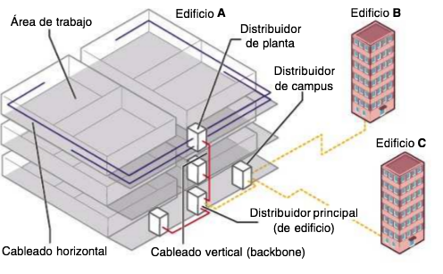
El mismo recorrido, visto como un tramo que se puede montar en el taller, va del puesto a la TO, sube por el horizontal hasta el panel del rack de planta (FD) y, dentro del armario, un latiguillo une el panel con el switch. El router o gateway de ese rack sale hacia el backbone (edificio BD y campus CD). Si cambias el switch, el tendido pasivo (TO, canaleta, panel) se queda.
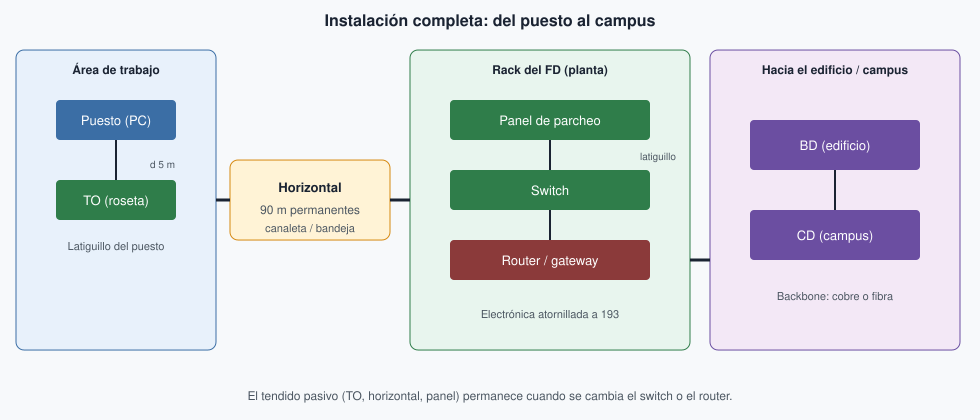
Errores frecuentes
Llamar «cableado estructurado» al latiguillo del PC al switch de mesa. El latiguillo es un tramo; el sistema es TO, tendido horizontal, panel, rack y backbone.
Montaje del adaptador de red¶
La NIC (Network Interface Card, tarjeta o adaptador de red), la dirección MAC y el dúplex ya se explicaron en el Tema 1, apartado Adaptador de red. En este tema nos centramos en su montaje.
En este tema lo que importa es el montaje físico y el software del adaptador, porque ambos entran en el taller. Una NIC puede ir integrada en la placa, instalarse en una ranura PCIe o conectarse por USB (incluido un dongle Wi‑Fi). Tras el montaje hay que instalar el driver y comprobar que el sistema operativo ve la interfaz. Eso cubre CE3b (montar el adaptador en el equipo) y CE4f (instalar el software), y se practica en PR305.
Ejemplo de aula. En el taller, si montáis una NIC PCIe, se apaga el PC, se descarga la electricidad estática y se encaja la tarjeta hasta el fondo. En Windows o Linux no basta con que «esté puesta»: tiene que aparecer en el administrador de dispositivos o en ip link / ipconfig. Si no hay enlace, se mira primero el latiguillo y el puerto del switch, no se reinstala el driver a ciegas.
Errores frecuentes
Confundir la velocidad de la NIC con la del switch: el enlace baja al mínimo común. Pensar que montar la tarjeta sin driver ya deja el equipo en red.
Armario de distribución (rack)¶
El rack concentra el cableado de una zona: paneles de parcheo, switches, unidades de alimentación (PDU o SAI), ventilación y accesorios de ordenación. La puerta transparente permite ver los LED sin abrir el armario; el techo y los laterales suelen ser desmontables para unir armarios o pasar mazos. Sin ese punto central, cada aula sería un ovillo de cables independiente y no habría forma razonable de mantener el edificio.
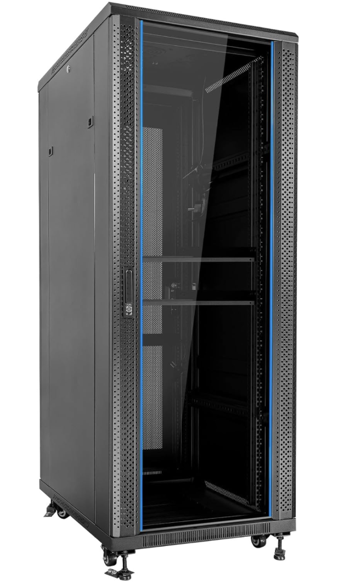
Estándar 19″ y unidad U¶
El interior tiene bastidores de 19 pulgadas: cualquier equipo rackeable encaja en esa anchura. La altura se mide en unidades U (aproximadamente 4,45 cm). Un panel de 24 puertos suele ocupar 1 U; un switch, 1 U o 2 U. Planificar las U libres evita llenar el armario el primer día y no poder añadir un segundo switch o un pasahilos.
Por tamaño, lo habitual es:
- menos de 12 U, redes pequeñas, a menudo de pared;
- 12–25 U, planta o edificio pequeño;
- más de 24 U, armarios de suelo, con ventilación y filtrado.
Ejemplo. Si el armario didáctico tiene 12 U y el panel ya ocupa 1 U, el switch se atornilla a los bastidores. Si solo se apoya sobre el panel, sin atornillar, se desplaza en cuanto se tensa un latiguillo.
Errores frecuentes
Estimar las U a ojo y dejar el switch en el canto del armario. Lo rackeable se atornilla a los bastidores.
Panel de parcheo¶
El panel de parcheo (patch panel) organiza las líneas que llegan al armario. Cada toma del panel se corresponde —y se etiqueta— con una TO del área de trabajo. De ese modo, cambiar un puesto es cambiar un latiguillo en el frontal, no abrir la canaleta.
Lo habitual son 24 o 48 puertos RJ‑45 en 1–2 U. También hay cajones de fibra. En la parte trasera, las regletas IDC usan el mismo código de colores que al crimpar el RJ‑45.
Ejemplo. El puerto 12 del panel corresponde a la mesa 12, y el latiguillo 12 va al puerto 12 del switch. Si las etiquetas se cruzan, un ping fallido ya no se puede diagnosticar con método.
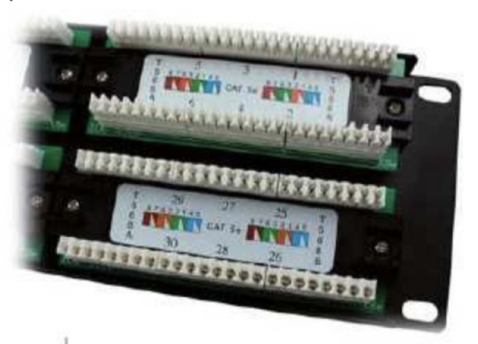
Tomas de usuario, latiguillos y guiado¶
Toma de usuario o TO (roseta)¶
La toma de usuario o TO (Telecommunications Outlet), también llamada roseta, es el punto de conexión del puesto: una o más hembras RJ‑45 (datos, voz y, si hay previsión, reserva). A partir de aquí, en el tema se usa TO. Tipos habituales:
- superficie (canaleta), frecuente en aulas reformadas;
- empotrable, en obra nueva;
- suelo técnico, en salas de informática o CPD.
La norma recomienda tres tomas por puesto (voz, datos y reserva) y un área de trabajo tipo de unos 10 m². El latiguillo entre el equipo y la TO no debe superar 5 m y ha de ser de la misma categoría que el tendido permanente. Si el latiguillo es más largo o de categoría inferior, el canal deja de cumplir la certificación aunque el UTP de la pared sea correcto.
Latiguillos¶
Los latiguillos son cables cortos con RJ‑45 en ambos extremos. Hay dos usos que no se mezclan: el del puesto (equipo ↔ TO) y el de parcheo (panel ↔ switch). Las longitudes comerciales habituales son 0,5 m, 1 m y 2 m. A partir de Cat. 6, muchos pliegos piden latiguillos certificados de fábrica. El de PR201 sirve para practicar el crimpado; no siempre vale como material de obra.
Soportes de guiado¶
El tendido horizontal no se deja suelto: va por un soporte que lo protege, respeta el radio de curvatura y permite ampliar. Canaletas y tubos recorren paredes y suelos; las bandejas llevan mazos por techo o suelo técnico; las guías ordenan el interior del rack; el pasahilos (1 U) peina los latiguillos del frontal para que no tapen los LED del switch.
| Elemento | Función |
|---|---|
| Canalizaciones | Tubos / canaletas por paredes y suelos |
| Bandejas | Mazos en techo o suelo técnico |
| Guías de cable | Orden en el rack |
| Pasahilos | 1 U para peinar latiguillos |
Ejemplo. En el armario del taller, sin pasahilos los latiguillos cubren los LED del switch y no se ve qué puerto está caído.
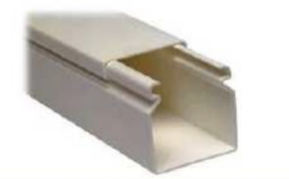
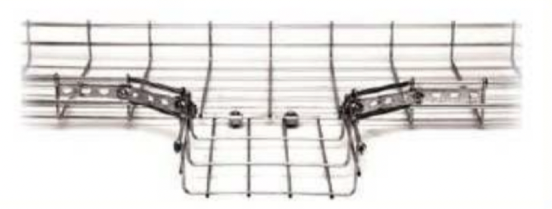
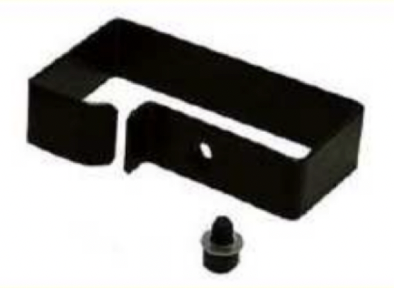
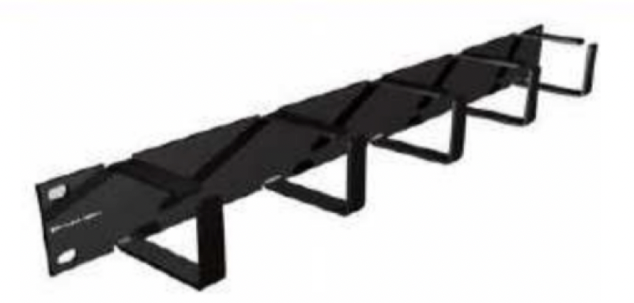
Etiquetado
Sin una correspondencia clara entre TO, panel y puerto del switch, cualquier avería o cambio de puesto obliga a rastrear los cables uno a uno. Es criterio de calidad (CE2i). La familia TIA‑606 trata precisamente la administración y el etiquetado.
Electrónica de red¶
La electrónica de red es el conjunto de equipos que regeneran, concentran, conmutan o encaminan el tráfico. Suele ir en el rack; el punto de acceso, en techo o pared, con alimentación por PoE o por la red eléctrica.
El repetidor solo regenera la señal (capa 1) y no divide el dominio de colisión. El hub reparte la señal a todos los puertos; hoy se usa en laboratorio. El switch reenvía por dirección MAC. El router une redes distintas. El gateway es la puerta hacia otra red o protocolo y a menudo incluye filtrado. El AP extiende la LAN por Wi‑Fi.
La tabla siguiente resume la capa y la función de cada equipo.
| Dispositivo | Capa OSI | Idea clave |
|---|---|---|
| Repetidor | 1 | Regenera la señal; no divide colisión |
| Hub | 1 | Replica a todos los puertos (laboratorio) |
| Switch | 2 | Reenvía por MAC; reduce colisiones |
| Router | 3 | Une redes distintas (IP) |
| Gateway | varias | Frontera / traducción / seguridad |
| AP | 1–2 | Extiende la LAN por Wi‑Fi |
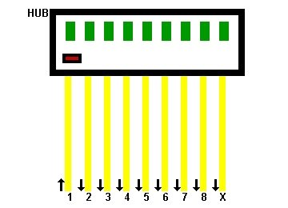
Switch (lo habitual en LAN)¶
El switch es el equipo que concentra la LAN de un aula o de una planta: cada puesto llega a un puerto y el tráfico se reenvía según la dirección MAC de destino, no según la IP. Frente al hub de la tabla de dispositivos, que replica la trama a todos los puertos y deja un solo dominio de colisión, el switch abre un dominio de colisión por puerto y trabaja en full‑dúplex. Esa diferencia ya se contó en el Tema 1, dominios de colisión y de difusión: en un enlace PC–switch moderno no hay colisión porque cada sentido tiene su canal. El hub queda para el laboratorio; en el armario del taller lo que se monta es el switch (CE3d, PR301).
Al arrancar, la tabla MAC (también llamada CAM, Content Addressable Memory) está vacía. Cuando un PC envía una trama, el switch anota «esta MAC se ve en este puerto». Si ya conoce el puerto del destino, reenvía solo por ahí. Si no lo conoce, inunda: copia la trama a todos los puertos menos al de entrada, igual que hace con las tramas de difusión (broadcast, por ejemplo FF:FF:FF:FF:FF:FF). Por eso el switch no corta el dominio de difusión: eso lo hace el router (o, más adelante, las VLAN).
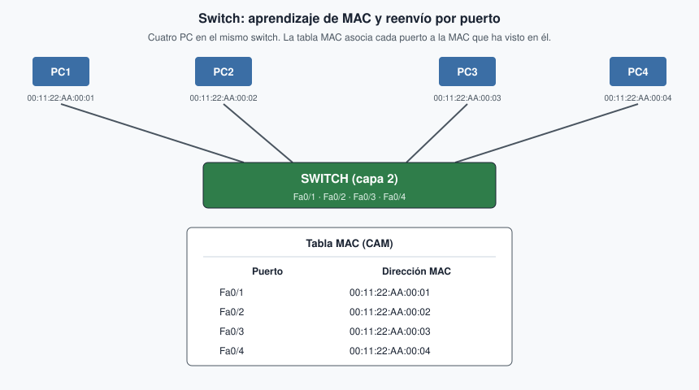
Los puertos habituales en cobre son RJ‑45 a 10/100/1000 Mb/s (a veces multi‑gig). Para el backbone o para unirse a otro armario se usan módulos SFP o SFP+ (fibra, o cobre en algunos transceptores). El puerto de consola sirve para configurar el equipo por cable serie o USB, sin pasar por la red. Un switch no gestionable no pide configuración: se enchufa y conmuta. Uno gestionable permite VLAN, QoS o SNMP; las VLAN se estudian en el Tema 6, aquí solo interesa saber que el modelo del rack puede tenerlas. Por forma hay switches de escritorio (pocos puertos, para un aula pequeña) y de rack 1 U (24 o 48 puertos, atornillados a los bastidores de 19″). PoE (Power over Ethernet) alimenta AP, cámaras IP y teléfonos por el mismo UTP, de modo que al techo llega un solo cable.
Ejemplo del taller. El switch del armario didáctico se atornilla a 1 U, se etiqueta y se une al panel con latiguillos cortos. Un puerto (o un SFP, si el equipo lo tiene) hace de uplink hacia el router o hacia el switch de edificio: por ahí sale el aula. Si ese uplink está caído, pinguean entre sí los PC del tramo y no sale nada hacia otras redes.
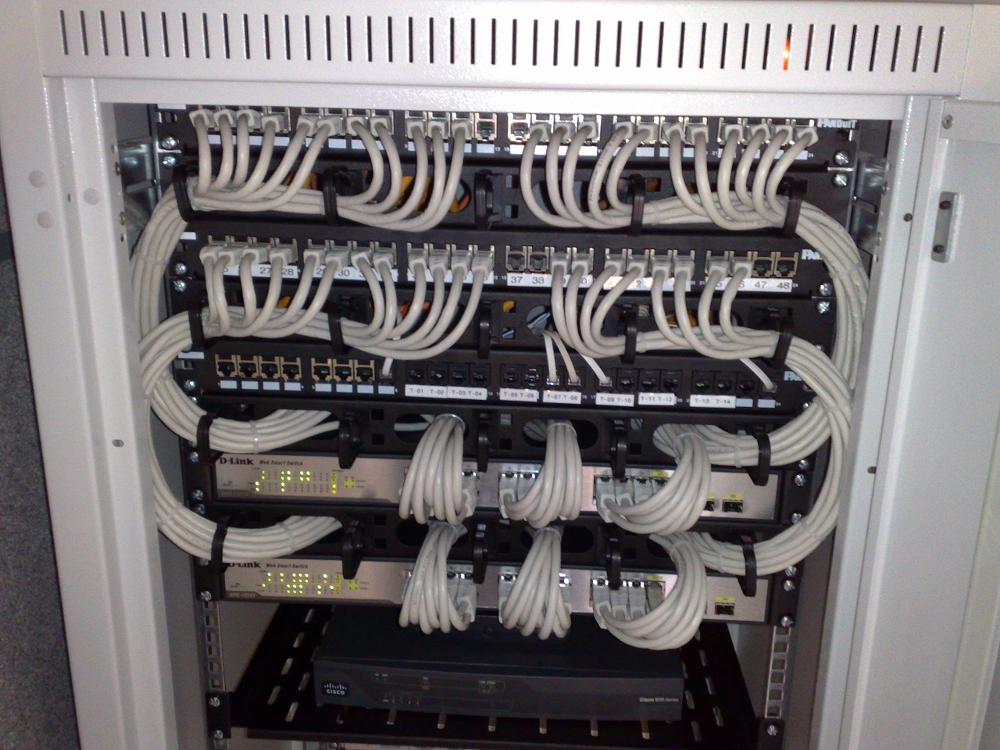

Router y gateway¶
El router une redes distintas. El switch reenvía por MAC dentro de la misma LAN; el router mira la dirección IP de destino y consulta su tabla de rutas para elegir la interfaz de salida. En el PC, esa salida se llama puerta de enlace (default gateway): es la IP LAN del router. Sin ella, el equipo habla con los vecinos de su red y no con Internet.
Las interfaces que hay que reconocer en el taller son tres. La LAN mira hacia el switch del aula (por ejemplo 192.168.10.1/24 en un ejemplo de laboratorio). La WAN mira hacia el proveedor. La consola sirve para entrar al equipo aunque la red esté caída. En el borde del edificio el mismo aparato suele hacer NAT (los PC salen con una dirección pública compartida) y, a veces, DHCP (reparte IP, máscara y puerta de enlace). El gateway es esa puerta hacia otra red o protocolo; un cortafuegos añade filtrado (qué entra y qué sale). Pueden ser el mismo chasis o dos equipos en cascada: primero se encamina, después se filtra, o al revés según el diseño.
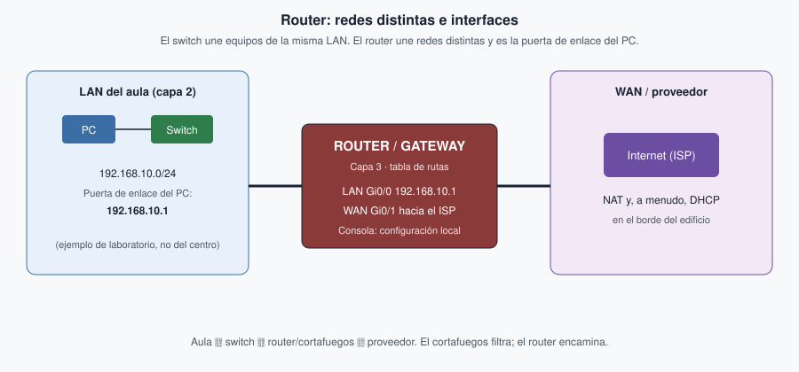
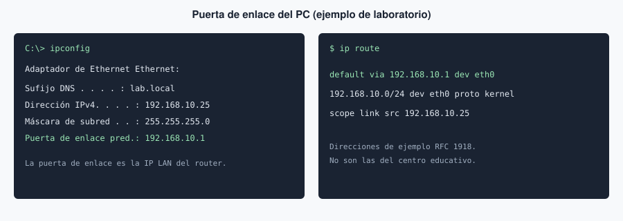
Ejemplo. El tráfico de un aula sube al switch del rack, de ahí al router o cortafuegos del edificio y, por último, al proveedor. Si el switch está bien y el router no tiene ruta por defecto, el ping entre mesas funciona y el ping a un servidor de Internet no.
Punto de acceso (AP)¶
El AP (Access Point) enlaza clientes Wi‑Fi con la red cableada. Los hay de interior y de exterior; muchos se alimentan por PoE. Para el examen y para PR305 hay que distinguir modos (CE4b), no solo «poner Wi‑Fi».
| Modo | Qué hace |
|---|---|
| AP (infraestructura) | Los clientes se asocian a él; él puentea hacia el switch |
| Repetidor | Recibe un Wi‑Fi y lo vuelve a emitir (se reduce el caudal útil) |
| Cliente / estación | El AP se comporta como una NIC Wi‑Fi hacia otro AP |
| Bridge | Une dos redes cableadas por un enlace Wi‑Fi |
Los parámetros básicos (CE4d) son el SSID (nombre de la red), el canal y la banda (2,4 GHz o 5 GHz) y la potencia. En seguridad (CE4i) se usa WPA2 o WPA3 con una clave no trivial. WEP y las redes abiertas no se usan en el taller salvo que se pida expresamente para una prueba.
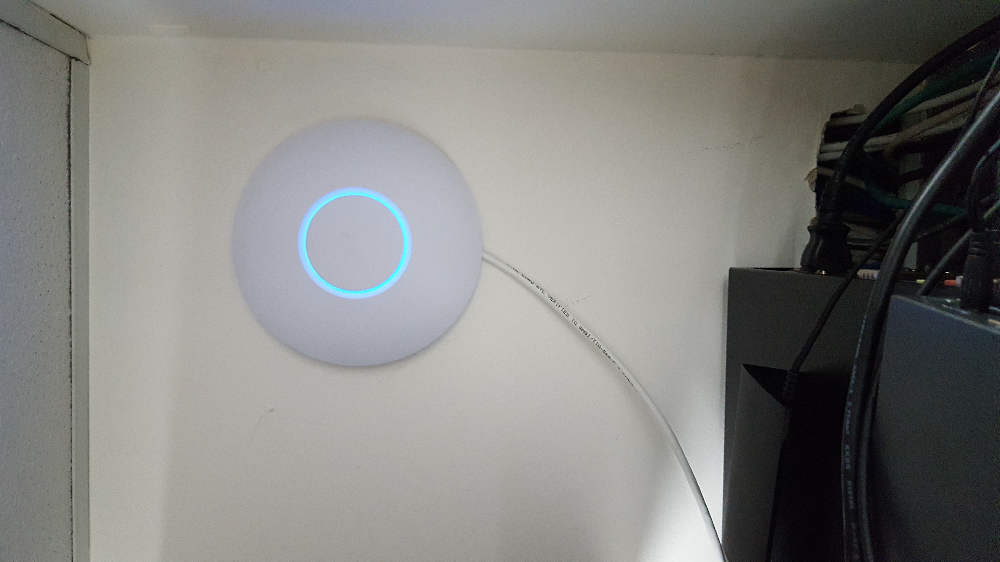
Para la certificación CCNA
En campus grandes el AP ligero lo gestiona un WLC (Wireless LAN Controller) con CAPWAP. En el taller usamos AP autónomos, cada uno con su propia configuración web. El CCNA pregunta las dos ideas; en el examen del módulo cuenta el AP que se monta en PR305.
Errores frecuentes
Confundir switch y router. Poner el AP en el mismo canal que el aula contigua (interferencia). Configurar WPA2 con una clave trivial y dar por resuelta la seguridad.
Normas y distancias¶
Las normas no son un adorno del temario: fijan distancias, espacios y cómo se etiqueta para que otra persona pueda mantener la instalación. La familia útil es TIA‑568 (cableado), 569 (espacios y canalizaciones), 606 (etiquetado) y 607 (tierra), con equivalente ISO/IEC 11801. TIA‑570 se cita en vivienda y TIA‑942 en centros de datos; no hace falta memorizarlas.
Bloques funcionales¶
La norma divide la instalación en cuatro bloques, del puesto de trabajo hacia fuera:
- Área de trabajo: puestos, TO y latiguillo corto (hasta 5 m).
- Horizontal: TO ↔ panel del FD (distribuidor de planta).
- Backbone (vertical): planta ↔ BD (distribuidor de edificio), a menudo en fibra.
- Campus: edificios ↔ CD, normalmente en fibra.
En el horizontal puede haber un punto de consolidación (a no menos de 15 m del FD) cuando las mesas se reorganizan con frecuencia.
Distancias orientativas (cobre)¶
El canal Ethernet de cobre son 100 m: 90 m de enlace permanente (TO ↔ panel) más unos 10 m de latiguillos (hasta 5 m en cada extremo). Superar esa cifra no es «un poco más de cable»: deja de cumplirse la certificación y el enlace suele degradarse.
| Tramo | Límite habitual |
|---|---|
| Horizontal (TO ↔ panel) | 90 m de cable permanente |
| Latiguillos (ambos extremos) | hasta ~5 m + ~5 m → 100 m de canal |
| Equipo ↔ TO | latiguillo corto (p. ej. ≤ 5 m) |
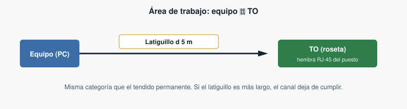
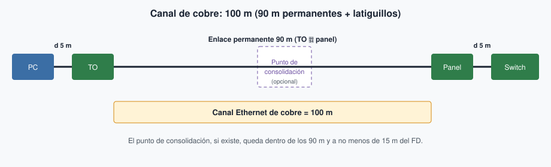
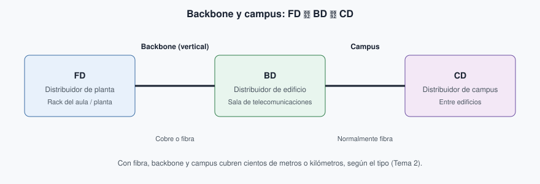
Con fibra, backbone y campus cubren cientos de metros o kilómetros según el tipo, como se vio en el Tema 2.
Tierra (visión breve)¶
TIA‑607 pide una tierra de telecomunicaciones: barra principal en el BD, barras en cada sala y conductores a cada rack (verde o verde‑amarillo). Esa tierra no es un adorno del armario: protege a las personas si un equipo tiene un fallo de aislamiento, da un camino a las descargas (estática o sobretensión) y reduce el ruido eléctrico que acopla a los pares de datos. En el taller no se deja el armario sin conexión a tierra si el puesto la tiene, ni se improvisan puentes con el cable de datos: el UTP no es conductor de protección.
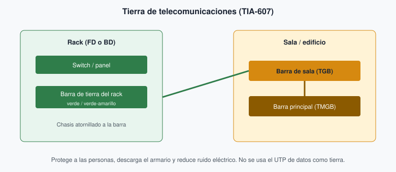
Errores frecuentes
Tender 110 m de UTP «porque Cat. 6 aguanta». La norma del canal son 100 m; a partir de ahí fallan la certificación y, a menudo, el enlace. Otro error: 90 m de horizontal más un latiguillo de 15 m.
Empalme por fusión (visión de taller)¶
En fibra, el empalme por fusión une dos núcleos fundiéndolos con un arco eléctrico controlado (fusionadora). No es un crimpado de RJ‑45: un corte sucio o una fibra sucia deja el enlace inservible. En el taller se trabaja, por este orden, la preparación (pelado, limpieza, corte con cleaver), la fusión, el protector termorretráctil y una comprobación básica (continuidad o potencia, según el equipo).
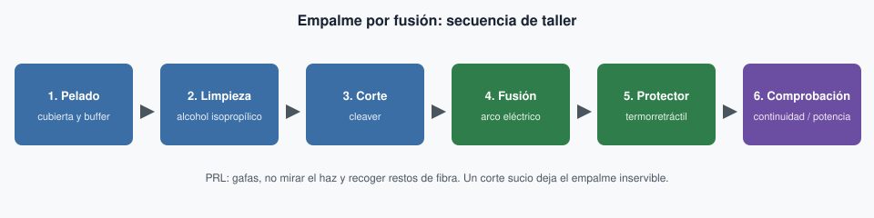
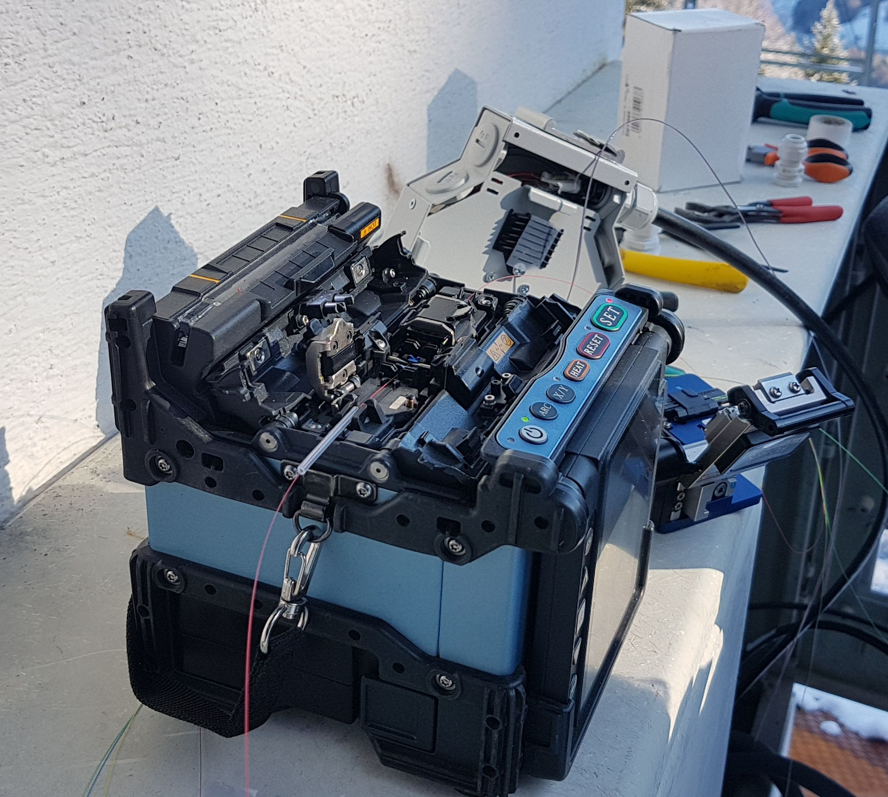

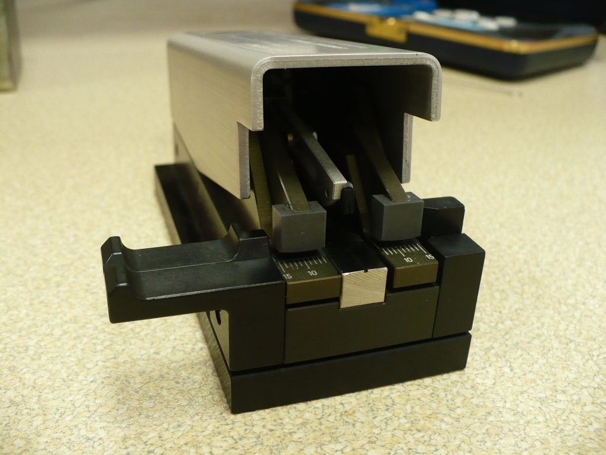

En PRL hacen falta gafas, no mirar el haz y recoger los restos de fibra en un recipiente específico: pinchan y apenas se ven.
La práctica evaluable es PR304. El crimpado de cobre (conectores RJ‑45) ya se hizo en PR201 (CE3c); aquí el mismo criterio se aplica a la fibra.
Actividades¶
Formato de entrega
Las entregas en Aules son obligatorias en Markdown (.md). No se aceptan PDF.
Nombre del archivo: AC3XX.md o PR3XX.md (sustituye XX por el número). Respeta la fecha de vencimiento.
Escribiremos los .md con Visual Studio Code.
Cómo empezar
- Guía de Markdown: tutorialmarkdown.com/guia
- Documentación de Visual Studio Code: code.visualstudio.com/docs
AC301 — NIC comparativa¶
- AC301. (RA3 // CE3b // RA4 // CE4a // AC 0–1). Tabla comparativa de NIC (cableada / USB / Wi‑Fi): velocidades, dúplex, interfaz y uso típico. Incluye qué es la MAC.
AC302 — Armario / rack¶
- AC302. (RA2 // CE2f // AC 0–1). Documenta estructura del rack 19″, unidades U, elementos internos (panel, electrónica, PDU, guías) y tipos según tamaño.
AC303 — Electrónica y capas OSI¶
- AC303. (RA3 // CE3d // RA4 // CE4a, CE4b // AC 0–1). Tabla: hub, switch, router, gateway y AP — capa OSI, función, escenario de uso y una limitación de cada uno.
AC304 — Tomas, latiguillos y guiado¶
- AC304. (RA2 // CE2d, CE2e, CE2g, CE2i // AC 0–1). Tipos de TO, uso de latiguillos, canalizaciones/bandejas/guías/pasahilos y buenas prácticas de etiquetado.
AC305 — Propuesta electrónica (centro educativo)¶
- AC305. (RA3 // CE3a, CE3d // RA4 // CE4c // AC 0–1). Propón la electrónica para un centro con dos edificios: switches de armario, router de salida, gateway/firewall y AP interiores/exteriores. Diagrama en Excalidraw, draw.io o Dia + breve justificación en el
.md.
PR301 — Taller: panel, tomas, armario y switch¶
| Campo | Valor |
|---|---|
| Código | PR301 |
| UP / tema | T3 — Cableado estructurado |
| RA principal | RA2 (despliegue) + RA3 (interconexión). Apoyo RA4 |
| CE de cobertura | CE2d, CE2f, CE2g, CE2i, CE2j · CE3a, CE3d, CE3e, CE3f |
| Sesiones estimadas | 2 |
| Instrumento | Checklist de montaje + rúbrica 0–10 |
- PR301. En el aula-taller (no solo simulación): montad y conexionad un tramo didáctico de cableado estructurado.
Enunciado (qué hace el alumno):
- Preparar el armario / rack didáctico (orden, U libres, guiado, seguridad).
- Montar o completar panel de parcheo y, si el puesto lo permite, toma de usuario (TO) o equivalente didáctico.
- Instalar el switch en el armario (fijación, alimentación, etiquetado del equipo).
- Conexionar panel ↔ switch con latiguillos; etiquetar puertos según el plan del profesor.
- Verificar conectividad básica (enlace / ping entre dos puestos del tramo).
- Documentar el montaje (fotos + esquema de puertos).
Evidencia: fotos del rack (antes/después), etiquetado visible, checklist de montaje, prueba de conectividad, PR301.md.
Entrega: PR301.md + evidencias en Aules.
| Criterio (rúbrica) | Descripción | Puntos |
|---|---|---|
| Rack / panel / TO | Montaje ordenado y conforme al plan | 0–3 |
| Switch + conexionado | Equipo fijado y enlazado a paneles | 0–3 |
| Verificación | Conectividad demostrada | 0–2 |
Informe .md |
Fotos, etiquetado, incidencias | 0–2 |
| Total | /10 |
PR304 — Taller: fusión de fibra / fusionadoras¶
| Campo | Valor |
|---|---|
| Código | PR304 |
| UP / tema | T3 — Cableado estructurado |
| RA principal | RA3 (empalmes en fibra). Apoyo RA2 y RA6 |
| CE de cobertura | CE3c, CE3f, CE3g · CE2c, CE2j · CE6b, CE6e |
| Sesiones estimadas | 2 |
| Instrumento | Checklist de fusión + rúbrica 0–10 |
- PR304. En taller, bajo supervisión: realizad un empalme por fusión (o la secuencia completa de preparación + fusión + protector que permita el material del centro).
Enunciado (pasos):
- EPI y normas: gafas; no mirar fuentes ópticas; recoger restos de fibra.
- Preparar fibras (pelado, limpieza, corte con cleaver).
- Ejecutar la fusión en la fusionadora; anotar la atenuación estimada si el equipo la muestra.
- Colocar el protector termorretráctil y asentar el empalme.
- Comprobación básica según el equipo disponible (continuidad / potencia / OK de la fusionadora).
- Documentar errores típicos (corte malo, suciedad, protector mal colocado) y cómo se corrigieron.
Evidencia: foto del puesto/fusionadora, captura o lectura de resultado, checklist PRL, PR304.md.
Entrega: PR304.md + evidencias en Aules.
| Criterio (rúbrica) | Descripción | Puntos |
|---|---|---|
| PRL / EPI | Normas aplicadas y documentadas | 0–2 |
| Preparación y corte | Cleaver / limpieza correctos | 0–2 |
| Fusión + protector | Empalme válido / protector asentado | 0–3 |
| Comprobación + informe | Evidencia de OK + .md |
0–3 |
| Total | /10 |
PR305 — Taller: WLAN real¶
| Campo | Valor |
|---|---|
| Código | PR305 |
| UP / tema | T3 — Cableado estructurado |
| RA principal | RA4. Apoyo RA3 (CE3b) |
| CE de cobertura | CE4a, CE4b, CE4c, CE4d, CE4e, CE4f, CE4i · CE3b |
| Sesiones estimadas | 3 |
| Instrumento | Checklist de montaje + rúbrica 0–10 |
- PR305. En el aula-taller, por grupos: montáis una NIC (PCIe o USB Wi‑Fi) con su driver, instaláis un AP o router Wi‑Fi del centro y dejáis una WLAN usable.
Enunciado (pasos):
- EPI y, si montáis PCIe, apagad el PC y descargad electricidad estática.
- Instalar la NIC o el adaptador USB y el driver hasta que el sistema vea la interfaz (CE3b, CE4f).
- Cablear el AP al switch del puesto; alimentar por PoE o por el adaptador de corriente.
- Entrar a la configuración (web o app que indique el profesor).
- Configurar modo (AP; repetidor o cliente si se pide), SSID, canal/banda y WPA2 o WPA3 con la clave del puesto. Si el equipo lo tiene, red de invitados (CE4a–d, CE4i).
- Asociar portátil o móvil y comprobar ping o navegación (CE4e).
- Anotar canal e interferencias (analizador o lista de redes vecinas).
- Foto del montaje y captura de estado (SSID, canal, seguridad, IP).
Evidencia: fotos, capturas de config y de conectividad, PR305.md.
Entrega: PR305.md + evidencias en Aules.
No sustituye PR301 ni PR304. No se hace en Packet Tracer.
| Criterio (rúbrica) | Descripción | Puntos |
|---|---|---|
| Montaje NIC + driver | Adaptador instalado y reconocido | 0–2 |
| AP instalado y alimentado | Cableado / PoE correctos | 0–2 |
| Parámetros y seguridad | Modo, SSID, canal, WPA2/WPA3 | 0–3 |
| Conectividad | Cliente asociado y ping o web | 0–2 |
Informe .md |
Capturas, canal e incidencias | 0–1 |
| Total | /10 |
PR303 — Pasa a certificación: trabajo para casa¶
| Campo | Valor |
|---|---|
| Código | PR303 |
| UP / tema | T3 — Cableado estructurado |
| Dónde | Casa (certificación / +1). No ocupa sesiones de este tema |
| Instrumento | Checklist; se corrige solo si hace falta |
- PR303. Práctica de Packet Tracer de WLAN (AP, SSID, canal, seguridad básica). Guion: PR303 — WLAN en Packet Tracer. Entrega
PR303.pktyPR303.mdcuando lo pida el profesor. No puntúa en la nota de los RA (entra en el +1 de certificación). No sustituye a PR305.
PR302 — Proyecto aulario¶
| Campo | Valor |
|---|---|
| Código | PR302 |
| UP / tema | T3 — Cableado estructurado |
| RA principal | RA2. Apoyo RA3 |
| CE de cobertura | CE2d, CE2e, CE2f, CE2g, CE2i, CE2j · CE3a |
| Sesiones estimadas | 1–2 |
| Instrumento | Rúbrica de diseño 0–10 |
-
PR302. En grupo, diseñad el cableado del aulario (dos plantas, aulas, Wi‑Fi, enlace al edificio principal vía campus). El diseño debe ser coherente con el taller (PR301, PR304, PR305): rack, paneles, fusión/medios, electrónica y WLAN.
-
Plano funcional: zonas, FD/BD/CD, horizontal y backbone.
- Diagrama en Excalidraw / draw.io / Dia.
- Justificación de medios (cobre/fibra), canalizaciones y electrónica básica.
- Idea de etiquetado y crecimiento (reserva de puertos/cables).
Evidencia / entrega: PR302.md + diagrama (PNG/SVG o archivo del editor, según Aules). Exposición breve (~5 min) si se indica en clase.
| Criterio (rúbrica) | Descripción | Puntos |
|---|---|---|
| Análisis del escenario | Necesidades y condicionantes claros | 0–2 |
| Diseño del cableado | Elementos funcionales y normativa coherentes | 0–2 |
| Justificación técnica | Medios, canalizaciones y equipos argumentados | 0–2 |
| Etiquetado y mantenimiento | Identificación y plan básico de ampliación | 0–2 |
Documentación .md + diagrama |
Claridad y completitud | 0–2 |
| Total | /10 |
Para el examen¶
El cableado estructurado es el sistema del edificio (TO, horizontal de 90 m, panel, rack, backbone), no el latiguillo suelto. La NIC (Tema 1) se monta aquí (PCIe o USB) y lleva driver. El rack es de 19″ y la altura se mide en U. El panel empareja cada TO con un puerto etiquetado; de ahí un latiguillo al switch. El hub queda para laboratorio; el switch, para la LAN; el router o gateway, para otras redes; el AP, para Wi‑Fi con SSID, canal y WPA2/WPA3, a menudo con PoE. En fusión de fibra: cleaver, fusionadora, protector y PRL. CE clave de este tema: CE2d, CE2f, CE2g, CE3a, CE3c, CE3f, CE4d, CE4i.
Autocheck del tema¶
Hazlo después de entregar el cuestionario inicial en Aules.
- V/F. El latiguillo del PC al switch de mesa ya es, por sí solo, un sistema de cableado estructurado.
- Empareja: TO · FD · CD con: (a) toma del puesto · (b) enlace entre edificios · (c) distribuidor de planta.
- El enlace permanente de cobre (TO ↔ panel) suele limitarse a…
a) 10 m · b) 55 m · c) 90 m · d) 300 m - V/F. Una NIC Wi‑Fi no tiene dirección MAC.
- Relaciona: hub · switch · router con capas 1, 2 y 3.
- Elige la correcta: PoE…
a) sube la categoría del UTP · b) alimenta equipos por el mismo par trenzado · c) solo existe en fibra - Nombra dos modos de funcionamiento de un AP.
- V/F. WEP es la seguridad recomendada hoy en el taller.
- ¿Qué distancia máxima se recomienda para el latiguillo equipo ↔ TO?
- El estándar que habla de etiquetado y administración del cableado es…
a) TIA‑568 · b) TIA‑606 · c) IEEE 802.11 · d) RFC 1918 - V/F. El repetidor divide el dominio de colisión.
- En la fusión de fibra, ¿para qué sirve el cleaver?
- V/F. El montaje de una NIC PCIe o USB cubre, entre otros, el criterio de instalar el adaptador en el equipo.
- Un canal Ethernet de cobre de 100 m se reparte, de forma habitual, en…
- ¿Qué compruebas en PR305 después de configurar SSID, canal y WPA2/WPA3?
Soluciones
Las soluciones se publicarán aquí cuando cierre el cuestionario inicial en Aules.
Vídeos recomendados¶
Pablo Hidalgo explica cómo trabaja un switch Ethernet de capa 2 (CCNA v1.1, lección 6): tabla MAC, unicast y broadcast.
Las lecciones 34–38 de la misma playlist (CCNA Completo v1.1) tratan WLAN (transmisión, estándares, WLC, WPA2/WPA3) y requieren membresía. El cobre y la fibra (lecciones 3 y 4) están en el Tema 2.
Glosario¶
NIC Network Interface Card: adaptador de red. Concepto y MAC en el Tema 1; en este tema, montaje (PCIe/USB) y driver.
rack Armario de comunicaciones con bastidores de 19 pulgadas; la altura se mide en unidades U.
panel de parcheo Panel (habitualmente RJ‑45) que concentra el cableado horizontal y se etiqueta TO a TO.
TO Toma de usuario o TO (Telecommunications Outlet), también llamada roseta: punto de conexión del puesto (superficie, empotrable o de suelo).
FD Floor Distributor: distribuidor de planta.
BD Building Distributor: distribuidor de edificio.
CD Campus Distributor: distribuidor de campus (entre edificios).
AP Access Point: punto de acceso Wi‑Fi que puentea clientes inalámbricos hacia la LAN cableada.
PoE Power over Ethernet: alimentación eléctrica por el mismo UTP (AP, cámaras, teléfonos).
SSID Nombre de la red Wi‑Fi que anuncia el AP.
WPA2 / WPA3 Mecanismos de seguridad Wi‑Fi actuales (clave o 802.1X). WEP está obsoleto.
Relación con el resto del módulo¶
El Tema 1 dio dispositivos, capas y la NIC; el Tema 2, el medio (UTP, fibra, Wi‑Fi, crimpado). Aquí se monta el edificio: rack, panel, TO y WLAN real (PR305). El Tema 4 profundiza en la trama y en el switch; el Tema 6, en VLAN sobre switch físico (PR604). La certificación (PR303 y el resto de Packet Tracer) se hace en casa.
Referencias rápidas¶
- Sitio del módulo: fjavier-hernandez.github.io/ral
- Diagramas: Excalidraw, draw.io (diagrams.net), Dia
- Simulación: Cisco Packet Tracer
- Entregas: Visual Studio Code + Markdown
- Normas: Normas del taller
- Playlist CCNA (Pablo Hidalgo): CCNA Completo v1.1